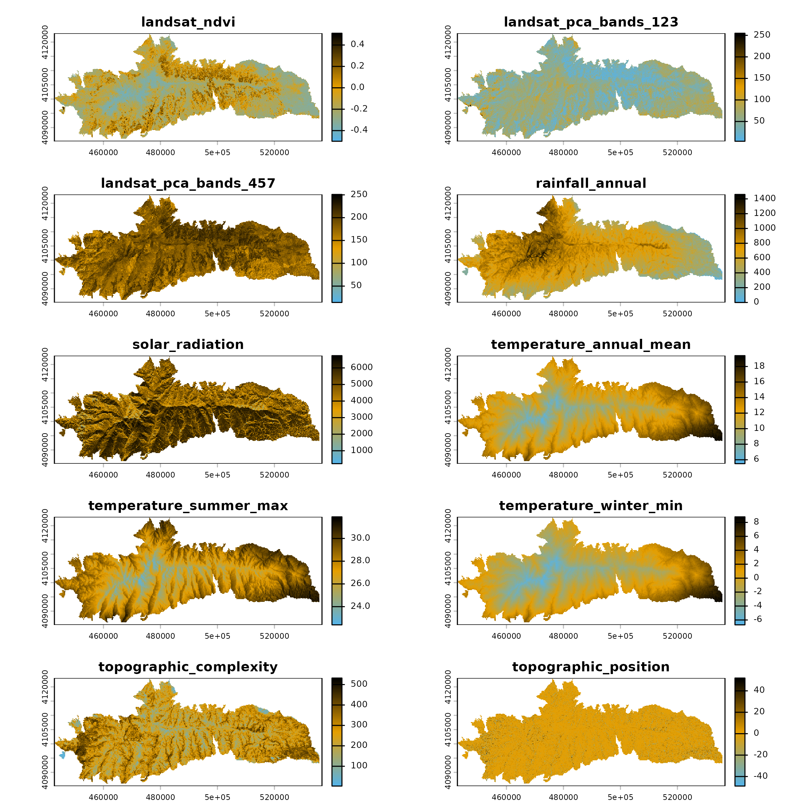

Source Code
You can download the Rmarkdown notebook used to render this article
here.
To download the file, use the button Download raw file on the
upper-right hand of the Code panel.
Overview
The interaction dataset contains occurrence records for
two Sierra Nevada (SE Spain) species: the host plant Androsace
vitaliana (host_plant) and the obligate specialist
butterfly Agriades zullichi (butterfly), together
with random background points.
The dataset includes 3 response variables and 10 environmental predictors derived from remote sensing, climate, and topographic data at 100 m resolution.
Setup
The code below loads the R libraries and example data required to run this tutorial.
if (!requireNamespace("pak", quietly = TRUE)) {
install.packages("pak")
}
library(pak)
pak::pkg_install(
c(
"dplyr",
"sf",
"mapview",
"terra",
"stars",
"collinear",
"spatialRF",
"spatialData"
),
ask = FALSE
)
#> ℹ Loading metadata database
#> ✔ Loading metadata database ... done
#>
#>
#> → Will install 1 system package:
#> + texlive - huxtable
#> ℹ No downloads are needed
#> ℹ Installing system requirements
#> ℹ Executing `sudo sh -c apt-get -y update`
#> Get:1 file:/etc/apt/apt-mirrors.txt Mirrorlist [144 B]
#> Hit:2 http://azure.archive.ubuntu.com/ubuntu noble InRelease
#> Hit:6 https://packages.microsoft.com/repos/azure-cli noble InRelease
#> Hit:7 https://packages.microsoft.com/ubuntu/24.04/prod noble InRelease
#> Hit:3 http://azure.archive.ubuntu.com/ubuntu noble-updates InRelease
#> Hit:4 http://azure.archive.ubuntu.com/ubuntu noble-backports InRelease
#> Hit:5 http://azure.archive.ubuntu.com/ubuntu noble-security InRelease
#> Hit:8 https://dl.google.com/linux/chrome-stable/deb stable InRelease
#> Reading package lists...
#> ℹ Executing `sudo sh -c apt-get -y install libabsl-dev cmake libssl-dev libgdal-dev gdal-bin libgeos-dev libproj-dev libsqlite3-dev libudunits2-dev make libuv1-dev zlib1g-dev pandoc libpng-dev libicu-dev libfontconfig1-dev libfreetype6-dev libfribidi-dev libharfbuzz-dev texlive libxml2-dev`
#> Reading package lists...
#> Building dependency tree...
#> Reading state information...
#> libabsl-dev is already the newest version (20220623.1-3.1ubuntu3.2).
#> cmake is already the newest version (3.28.3-1build7).
#> libssl-dev is already the newest version (3.0.13-0ubuntu3.9).
#> libgdal-dev is already the newest version (3.8.4+dfsg-3ubuntu3).
#> gdal-bin is already the newest version (3.8.4+dfsg-3ubuntu3).
#> libgeos-dev is already the newest version (3.12.1-3build1).
#> libproj-dev is already the newest version (9.4.0-1build2).
#> libsqlite3-dev is already the newest version (3.45.1-1ubuntu2.5).
#> libudunits2-dev is already the newest version (2.2.28-7build1).
#> make is already the newest version (4.3-4.1build2).
#> libuv1-dev is already the newest version (1.48.0-1.1build1).
#> zlib1g-dev is already the newest version (1:1.3.dfsg-3.1ubuntu2.1).
#> pandoc is already the newest version (3.1.3+ds-2).
#> libpng-dev is already the newest version (1.6.43-5ubuntu0.5).
#> libicu-dev is already the newest version (74.2-1ubuntu3.1).
#> libfontconfig1-dev is already the newest version (2.15.0-1.1ubuntu2).
#> libfreetype-dev is already the newest version (2.13.2+dfsg-1ubuntu0.1).
#> libfribidi-dev is already the newest version (1.0.13-3build1).
#> libharfbuzz-dev is already the newest version (8.3.0-2build2).
#> libxml2-dev is already the newest version (2.9.14+dfsg-1.3ubuntu3.7).
#> The following additional packages will be installed:
#> dvisvgm fonts-lmodern fonts-texgyre fonts-texgyre-math libgumbo2
#> libkpathsea6 libmujs3 libpotrace0 libptexenc1 libsynctex2 libteckit0
#> libtexlua53-5 libwoff1 libzzip-0-13t64 lmodern mupdf-tools tex-gyre
#> texlive-base texlive-binaries texlive-fonts-recommended texlive-latex-base
#> texlive-latex-recommended tipa
#> Suggested packages:
#> perl-tk xpdf | pdf-viewer xzdec texlive-binaries-sse2 hintview
#> texlive-fonts-recommended-doc texlive-latex-base-doc wp2latex
#> texlive-latex-recommended-doc texlive-luatex texlive-pstricks tipa-doc
#> The following NEW packages will be installed:
#> dvisvgm fonts-lmodern fonts-texgyre fonts-texgyre-math libgumbo2
#> libkpathsea6 libmujs3 libpotrace0 libptexenc1 libsynctex2 libteckit0
#> libtexlua53-5 libwoff1 libzzip-0-13t64 lmodern mupdf-tools tex-gyre texlive
#> texlive-base texlive-binaries texlive-fonts-recommended texlive-latex-base
#> texlive-latex-recommended tipa
#> 0 upgraded, 24 newly installed, 0 to remove and 53 not upgraded.
#> Need to get 131 MB of archives.
#> After this operation, 322 MB of additional disk space will be used.
#> Get:1 file:/etc/apt/apt-mirrors.txt Mirrorlist [144 B]
#> Get:2 http://azure.archive.ubuntu.com/ubuntu noble/main amd64 libkpathsea6 amd64 2023.20230311.66589-9build3 [63.0 kB]
#> Get:3 http://azure.archive.ubuntu.com/ubuntu noble/universe amd64 libpotrace0 amd64 1.16-2build1 [17.7 kB]
#> Get:4 http://azure.archive.ubuntu.com/ubuntu noble/main amd64 libwoff1 amd64 1.0.2-2build1 [45.3 kB]
#> Get:5 http://azure.archive.ubuntu.com/ubuntu noble/universe amd64 dvisvgm amd64 3.2.1+ds-1build1 [1042 kB]
#> Get:6 http://azure.archive.ubuntu.com/ubuntu noble/universe amd64 fonts-lmodern all 2.005-1 [4799 kB]
#> Get:7 http://azure.archive.ubuntu.com/ubuntu noble/universe amd64 fonts-texgyre all 20180621-6 [8350 kB]
#> Get:8 http://azure.archive.ubuntu.com/ubuntu noble/universe amd64 fonts-texgyre-math all 20180621-6 [2373 kB]
#> Get:9 http://azure.archive.ubuntu.com/ubuntu noble/universe amd64 libgumbo2 amd64 0.12.0+dfsg-2build1 [126 kB]
#> Get:10 http://azure.archive.ubuntu.com/ubuntu noble/universe amd64 libmujs3 amd64 1.3.3-3build2 [134 kB]
#> Get:11 http://azure.archive.ubuntu.com/ubuntu noble/main amd64 libptexenc1 amd64 2023.20230311.66589-9build3 [40.4 kB]
#> Get:12 http://azure.archive.ubuntu.com/ubuntu noble/main amd64 libsynctex2 amd64 2023.20230311.66589-9build3 [59.6 kB]
#> Get:13 http://azure.archive.ubuntu.com/ubuntu noble/universe amd64 libteckit0 amd64 2.5.12+ds1-1 [411 kB]
#> Get:14 http://azure.archive.ubuntu.com/ubuntu noble/main amd64 libtexlua53-5 amd64 2023.20230311.66589-9build3 [123 kB]
#> Get:15 http://azure.archive.ubuntu.com/ubuntu noble/universe amd64 libzzip-0-13t64 amd64 0.13.72+dfsg.1-1.2build1 [28.1 kB]
#> Get:16 http://azure.archive.ubuntu.com/ubuntu noble/universe amd64 lmodern all 2.005-1 [9542 kB]
#> Get:17 http://azure.archive.ubuntu.com/ubuntu noble/universe amd64 mupdf-tools amd64 1.23.10+ds1-1build3 [49.3 MB]
#> Get:18 http://azure.archive.ubuntu.com/ubuntu noble/universe amd64 tex-gyre all 20180621-6 [6396 kB]
#> Get:19 http://azure.archive.ubuntu.com/ubuntu noble/universe amd64 texlive-binaries amd64 2023.20230311.66589-9build3 [8529 kB]
#> Get:20 http://azure.archive.ubuntu.com/ubuntu noble/universe amd64 texlive-base all 2023.20240207-1 [21.7 MB]
#> Get:21 http://azure.archive.ubuntu.com/ubuntu noble/universe amd64 texlive-fonts-recommended all 2023.20240207-1 [4973 kB]
#> Get:22 http://azure.archive.ubuntu.com/ubuntu noble/universe amd64 texlive-latex-base all 2023.20240207-1 [1238 kB]
#> Get:23 http://azure.archive.ubuntu.com/ubuntu noble/universe amd64 texlive-latex-recommended all 2023.20240207-1 [8826 kB]
#> Get:24 http://azure.archive.ubuntu.com/ubuntu noble/universe amd64 texlive all 2023.20240207-1 [14.0 kB]
#> Get:25 http://azure.archive.ubuntu.com/ubuntu noble/universe amd64 tipa all 2:1.3-21 [2967 kB]
#> Preconfiguring packages ...
#> Fetched 131 MB in 3s (42.3 MB/s)
#> Selecting previously unselected package libkpathsea6:amd64.
#> (Reading database ...
#> (Reading database ... 5%(Reading database ... 10%(Reading database ... 15%(Reading database ... 20%(Reading database ... 25%(Reading database ... 30%(Reading database ... 35%(Reading database ... 40%(Reading database ... 45%(Reading database ... 50%(Reading database ... 55%
#> (Reading database ... 60%
#> (Reading database ... 65%
#> (Reading database ... 70%
#> (Reading database ... 75%
#> (Reading database ... 80%
#> (Reading database ... 85%
#> (Reading database ... 90%
#> (Reading database ... 95%
#> (Reading database ... 100%(Reading database ... 257566 files and directories currently installed.)
#> Preparing to unpack .../00-libkpathsea6_2023.20230311.66589-9build3_amd64.deb ...
#> Unpacking libkpathsea6:amd64 (2023.20230311.66589-9build3) ...
#> Selecting previously unselected package libpotrace0:amd64.
#> Preparing to unpack .../01-libpotrace0_1.16-2build1_amd64.deb ...
#> Unpacking libpotrace0:amd64 (1.16-2build1) ...
#> Selecting previously unselected package libwoff1:amd64.
#> Preparing to unpack .../02-libwoff1_1.0.2-2build1_amd64.deb ...
#> Unpacking libwoff1:amd64 (1.0.2-2build1) ...
#> Selecting previously unselected package dvisvgm.
#> Preparing to unpack .../03-dvisvgm_3.2.1+ds-1build1_amd64.deb ...
#> Unpacking dvisvgm (3.2.1+ds-1build1) ...
#> Selecting previously unselected package fonts-lmodern.
#> Preparing to unpack .../04-fonts-lmodern_2.005-1_all.deb ...
#> Unpacking fonts-lmodern (2.005-1) ...
#> Selecting previously unselected package fonts-texgyre.
#> Preparing to unpack .../05-fonts-texgyre_20180621-6_all.deb ...
#> Unpacking fonts-texgyre (20180621-6) ...
#> Selecting previously unselected package fonts-texgyre-math.
#> Preparing to unpack .../06-fonts-texgyre-math_20180621-6_all.deb ...
#> Unpacking fonts-texgyre-math (20180621-6) ...
#> Selecting previously unselected package libgumbo2:amd64.
#> Preparing to unpack .../07-libgumbo2_0.12.0+dfsg-2build1_amd64.deb ...
#> Unpacking libgumbo2:amd64 (0.12.0+dfsg-2build1) ...
#> Selecting previously unselected package libmujs3:amd64.
#> Preparing to unpack .../08-libmujs3_1.3.3-3build2_amd64.deb ...
#> Unpacking libmujs3:amd64 (1.3.3-3build2) ...
#> Selecting previously unselected package libptexenc1:amd64.
#> Preparing to unpack .../09-libptexenc1_2023.20230311.66589-9build3_amd64.deb ...
#> Unpacking libptexenc1:amd64 (2023.20230311.66589-9build3) ...
#> Selecting previously unselected package libsynctex2:amd64.
#> Preparing to unpack .../10-libsynctex2_2023.20230311.66589-9build3_amd64.deb ...
#> Unpacking libsynctex2:amd64 (2023.20230311.66589-9build3) ...
#> Selecting previously unselected package libteckit0:amd64.
#> Preparing to unpack .../11-libteckit0_2.5.12+ds1-1_amd64.deb ...
#> Unpacking libteckit0:amd64 (2.5.12+ds1-1) ...
#> Selecting previously unselected package libtexlua53-5:amd64.
#> Preparing to unpack .../12-libtexlua53-5_2023.20230311.66589-9build3_amd64.deb ...
#> Unpacking libtexlua53-5:amd64 (2023.20230311.66589-9build3) ...
#> Selecting previously unselected package libzzip-0-13t64:amd64.
#> Preparing to unpack .../13-libzzip-0-13t64_0.13.72+dfsg.1-1.2build1_amd64.deb ...
#> Unpacking libzzip-0-13t64:amd64 (0.13.72+dfsg.1-1.2build1) ...
#> Selecting previously unselected package lmodern.
#> Preparing to unpack .../14-lmodern_2.005-1_all.deb ...
#> Unpacking lmodern (2.005-1) ...
#> Selecting previously unselected package mupdf-tools.
#> Preparing to unpack .../15-mupdf-tools_1.23.10+ds1-1build3_amd64.deb ...
#> Unpacking mupdf-tools (1.23.10+ds1-1build3) ...
#> Selecting previously unselected package tex-gyre.
#> Preparing to unpack .../16-tex-gyre_20180621-6_all.deb ...
#> Unpacking tex-gyre (20180621-6) ...
#> Selecting previously unselected package texlive-binaries.
#> Preparing to unpack .../17-texlive-binaries_2023.20230311.66589-9build3_amd64.deb ...
#> Unpacking texlive-binaries (2023.20230311.66589-9build3) ...
#> Selecting previously unselected package texlive-base.
#> Preparing to unpack .../18-texlive-base_2023.20240207-1_all.deb ...
#> Unpacking texlive-base (2023.20240207-1) ...
#> Selecting previously unselected package texlive-fonts-recommended.
#> Preparing to unpack .../19-texlive-fonts-recommended_2023.20240207-1_all.deb ...
#> Unpacking texlive-fonts-recommended (2023.20240207-1) ...
#> Selecting previously unselected package texlive-latex-base.
#> Preparing to unpack .../20-texlive-latex-base_2023.20240207-1_all.deb ...
#> Unpacking texlive-latex-base (2023.20240207-1) ...
#> Selecting previously unselected package texlive-latex-recommended.
#> Preparing to unpack .../21-texlive-latex-recommended_2023.20240207-1_all.deb ...
#> Unpacking texlive-latex-recommended (2023.20240207-1) ...
#> Selecting previously unselected package texlive.
#> Preparing to unpack .../22-texlive_2023.20240207-1_all.deb ...
#> Unpacking texlive (2023.20240207-1) ...
#> Selecting previously unselected package tipa.
#> Preparing to unpack .../23-tipa_2%3a1.3-21_all.deb ...
#> Unpacking tipa (2:1.3-21) ...
#> Setting up fonts-texgyre-math (20180621-6) ...
#> Setting up libwoff1:amd64 (1.0.2-2build1) ...
#> Setting up libmujs3:amd64 (1.3.3-3build2) ...
#> Setting up libzzip-0-13t64:amd64 (0.13.72+dfsg.1-1.2build1) ...
#> Setting up libgumbo2:amd64 (0.12.0+dfsg-2build1) ...
#> Setting up libteckit0:amd64 (2.5.12+ds1-1) ...
#> Setting up libtexlua53-5:amd64 (2023.20230311.66589-9build3) ...
#> Setting up fonts-texgyre (20180621-6) ...
#> Setting up libkpathsea6:amd64 (2023.20230311.66589-9build3) ...
#> Setting up fonts-lmodern (2.005-1) ...
#> Setting up tex-gyre (20180621-6) ...
#> Setting up libsynctex2:amd64 (2023.20230311.66589-9build3) ...
#> Setting up libpotrace0:amd64 (1.16-2build1) ...
#> Setting up dvisvgm (3.2.1+ds-1build1) ...
#> Setting up mupdf-tools (1.23.10+ds1-1build3) ...
#> Setting up libptexenc1:amd64 (2023.20230311.66589-9build3) ...
#> Setting up texlive-binaries (2023.20230311.66589-9build3) ...
#> update-alternatives: using /usr/bin/xdvi-xaw to provide /usr/bin/xdvi.bin (xdvi.bin) in auto mode
#> update-alternatives: using /usr/bin/bibtex.original to provide /usr/bin/bibtex (bibtex) in auto mode
#> Setting up lmodern (2.005-1) ...
#> Setting up texlive-base (2023.20240207-1) ...
#> tl-paper: setting paper size for dvips to a4: /var/lib/texmf/dvips/config/config-paper.ps
#> tl-paper: setting paper size for dvipdfmx to a4: /var/lib/texmf/dvipdfmx/dvipdfmx-paper.cfg
#> tl-paper: setting paper size for xdvi to a4: /var/lib/texmf/xdvi/XDvi-paper
#> tl-paper: setting paper size for pdftex to a4: /var/lib/texmf/tex/generic/tex-ini-files/pdftexconfig.tex
#> Setting up texlive-latex-base (2023.20240207-1) ...
#> Setting up texlive-latex-recommended (2023.20240207-1) ...
#> Setting up texlive-fonts-recommended (2023.20240207-1) ...
#> Setting up tipa (2:1.3-21) ...
#> Setting up texlive (2023.20240207-1) ...
#> Processing triggers for man-db (2.12.0-4build2) ...
#> Not building database; man-db/auto-update is not 'true'.
#> Processing triggers for tex-common (6.18) ...
#> Running mktexlsr. This may take some time...
#> done.
#> Running updmap-sys. This may take some time...
#> done.
#> Running mktexlsr /var/lib/texmf ...
#> done.
#> Building format(s) --all.
#> This may take some time...
#> done.
#> Processing triggers for install-info (7.1-3build2) ...
#> Processing triggers for fontconfig (2.15.0-1.1ubuntu2) ...
#> Processing triggers for libc-bin (2.39-0ubuntu8.7) ...
#> Running kernel seems to be up-to-date.
#>
#> No services need to be restarted.
#>
#> No containers need to be restarted.
#>
#> No user sessions are running outdated binaries.
#>
#> No VM guests are running outdated hypervisor (qemu) binaries on this host.
#> ✔ 8 pkgs + 126 deps: kept 134 [38.1s]Data Structure
The dataset interaction is an sf data frame with 1000
rows and 14 columns.
dplyr::glimpse(interaction)
#> Rows: 1,000
#> Columns: 14
#> $ butterfly <int> 1, 1, 1, 1, 1, 1, 1, 1, 1, 1, 1, 1, 1, 1, 1, 1…
#> $ host_plant <int> NA, NA, NA, NA, NA, NA, NA, NA, NA, NA, NA, NA…
#> $ class <fct> butterfly, butterfly, butterfly, butterfly, bu…
#> $ landsat_ndvi <dbl> -0.3300000, -0.3299874, -0.3500096, -0.3599888…
#> $ landsat_pca_bands_123 <dbl> 82.99309, 71.99628, 81.99959, 81.99986, 85.995…
#> $ landsat_pca_bands_457 <dbl> 184.0043, 191.0012, 183.0027, 184.9953, 165.00…
#> $ rainfall_annual <dbl> 833.9741, 802.0032, 1009.0140, 1020.0392, 934.…
#> $ solar_radiation <dbl> 6408.431, 5598.753, 5580.747, 5335.484, 6403.8…
#> $ temperature_annual_mean <dbl> 8.000202, 8.299868, 7.199986, 7.200083, 7.8995…
#> $ temperature_summer_max <dbl> 25.40020, 25.70001, 24.39999, 24.50018, 24.599…
#> $ temperature_winter_min <dbl> -4.899726, -4.500000, -5.299973, -5.300069, -4…
#> $ topographic_complexity <dbl> 269.9580, 211.9756, 235.9967, 241.9926, 267.03…
#> $ topographic_position <dbl> -0.997110546, 2.998544216, 6.007016182, 14.000…
#> $ geometry <POINT [m]> POINT (463352.8 4096288), POINT (463332.…The three response variables are:
-
class: factor with levels"butterfly","host_plant", and"background", identifying the observation type of each row. You can interpret background points as the presence of “anything that is not butterfly or host plant”.
table(interaction$class)
#>
#> background butterfly host_plant
#> 628 197 175-
butterfly: integer with values 1 and 0 representing butterfly and background records, andNAfor the host plant records (to simplify subsetting).
-
host_plant: integer with values 1 and 0 indicating host plant presence and background records, andNAfor the butterfly records.
The map below shows a spatial representation of the
class column.
mapview::mapview(
interaction,
zcol = "class",
layer.name = "class",
col.regions = interaction_colors,
color = NULL
)The dataset includes 10 environmental predictors covering remote sensing, climate, and topography at 100m resolution.
interaction_predictors
#> [1] "landsat_ndvi" "landsat_pca_bands_123"
#> [3] "landsat_pca_bands_457" "rainfall_annual"
#> [5] "solar_radiation" "temperature_annual_mean"
#> [7] "temperature_summer_max" "temperature_winter_min"
#> [9] "topographic_complexity" "topographic_position"Example Usage
In this example we train two models:
Host plant model: Random forest model of the host plant using abiotic predictors.
Butterfly model: Random forest model of the butterfly using the prediction of the host plant model as a biotic predictor along with the abiotic ones.
Host Plant Model
To train the host plant model we first prepare a training data frame with the plant and background records, and a data frame with case coordinates to be used in spatial cross-validation.
host_plant_df <- interaction |>
dplyr::select(
-butterfly
) |>
na.omit()
host_plant_xy <- host_plant_df |>
sf::st_coordinates() |>
as.data.frame() |>
dplyr::rename(
x = X,
y = Y
)The function collinear::collinear()
selects a non-correlated subset of the most relevant predictors. The
function ranks all predictors by the AUC of univariate binomial random
forest models with case weights, and then applies a multicollinearity
filtering that preserves the most important ones.
host_plant_selection <- collinear::collinear(
df = host_plant_df,
responses = "host_plant",
predictors = interaction_predictors,
f = collinear::f_binomial_rf
)
#>
#> collinear::collinear()
#> └── collinear::validate_arg_df()
#> └── collinear::drop_geometry_column(): dropping geometry column from 'df'.
#>
#> collinear::collinear(): setting 'max_cor' to 0.5022.
#>
#> collinear::collinear(): setting 'max_vif' to 2.6413.
#>
#> collinear::collinear(): selected predictors:
#> - temperature_annual_mean
#> - landsat_ndvi
#> - landsat_pca_bands_457
#> - topographic_position
#> - topographic_complexity
#> - solar_radiationThe names of the selected predictors are stored in the vector below.
host_plant_selection$host_plant$selection
#> [1] "temperature_annual_mean" "landsat_ndvi"
#> [3] "landsat_pca_bands_457" "topographic_position"
#> [5] "topographic_complexity" "solar_radiation"
#> attr(,"validated")
#> [1] TRUEHere we train a random forest model with spatialRF::rf(),
which computes case weights internally to control for class
imbalance.
host_plant_model <- spatialRF::rf(
data = sf::st_drop_geometry(host_plant_df),
dependent.variable.name = "host_plant",
predictor.variable.names = host_plant_selection$host_plant$selection,
verbose = FALSE
)To understand how well the model works on unseen data, we perform
spatial cross-validation via spatialRF::rf_evaluate(),
which partitions the data into spatially disjunct training and testing
folds, providing an honest assessment of the model’s ability to predict
habitat suitability for the host plant on unseen data.
host_plant_model <- spatialRF::rf_evaluate(
model = host_plant_model,
xy = host_plant_xy,
metrics = "auc",
verbose = FALSE
)
host_plant_model$evaluation$aggregated |>
dplyr::filter(model == "Testing") |>
dplyr::glimpse()
#> Rows: 1
#> Columns: 11
#> $ model <chr> "Testing"
#> $ metric <chr> "auc"
#> $ median <dbl> 0.962
#> $ median_absolute_deviation <dbl> 0.0133434
#> $ q1 <dbl> 0.95125
#> $ q3 <dbl> 0.969
#> $ mean <dbl> 0.9618667
#> $ se <dbl> 0.002
#> $ sd <dbl> 0.01338999
#> $ min <dbl> 0.937
#> $ max <dbl> 0.994The dataframe shows the stats of the AUC scores on 30 cross-validation repetitions. The median score indicates that the model has no issues discriminating between host plant and background records.
Finally, we predict the host plant suitability for all rows in the
dataframe interaction, and write the result to the new
column host_plant_suitability.
interaction$host_plant_suitability <- predict(
host_plant_model,
data = sf::st_drop_geometry(interaction)
)$predictions
head(interaction$host_plant_suitability)
#> [1] 0.9733667 0.9901333 0.9858000 0.9870667 0.9959333 0.9914667Butterfly Model
To model the distribution of the butterfly, we prepare
butterfly_df and butterfly_xy in the same way
we did for the host plant, but in this case we add the new biotic
predictor host_plant_suitability to the vector
interaction_predictors.
butterfly_df <- interaction |>
dplyr::select(
-host_plant
) |>
na.omit()
butterfly_xy <- butterfly_df |>
sf::st_coordinates() |>
as.data.frame() |>
dplyr::rename(
x = X,
y = Y
)
butterfly_predictors <- c(
interaction_predictors,
"host_plant_suitability"
)We use collinear::collinear() again to select the best
subset of non-collinear predictors for the butterfly.
butterfly_selection <- collinear::collinear(
df = butterfly_df,
responses = "butterfly",
predictors = butterfly_predictors,
f = collinear::f_binomial_rf
)
#>
#> collinear::collinear()
#> └── collinear::validate_arg_df()
#> └── collinear::drop_geometry_column(): dropping geometry column from 'df'.
#>
#> collinear::collinear(): setting 'max_cor' to 0.509.
#>
#> collinear::collinear(): setting 'max_vif' to 2.754.
#>
#> collinear::collinear(): selected predictors:
#> - host_plant_suitability
#> - rainfall_annual
#> - landsat_pca_bands_123
#> - topographic_complexity
#> - topographic_position
#> - solar_radiationNotice how the selected non-collinear predictors include the new
predictor host_plant_suitability!
butterfly_selection$butterfly$selection
#> [1] "host_plant_suitability" "rainfall_annual" "landsat_pca_bands_123"
#> [4] "topographic_complexity" "topographic_position" "solar_radiation"
#> attr(,"validated")
#> [1] TRUEBelow we use the same modelling pattern we used with the host plant to model the suitability of the butterfly.
butterfly_model <- spatialRF::rf(
data = sf::st_drop_geometry(butterfly_df),
dependent.variable.name = "butterfly",
predictor.variable.names = butterfly_selection$butterfly$selection,
verbose = FALSE
)
butterfly_model <- spatialRF::rf_evaluate(
model = butterfly_model,
xy = butterfly_xy,
metrics = "auc",
verbose = FALSE
)
butterfly_model$evaluation$aggregated |>
dplyr::filter(model == "Testing") |>
dplyr::glimpse()
#> Rows: 1
#> Columns: 11
#> $ model <chr> "Testing"
#> $ metric <chr> "auc"
#> $ median <dbl> 0.993
#> $ median_absolute_deviation <dbl> 0.0044478
#> $ q1 <dbl> 0.98825
#> $ q3 <dbl> 0.994
#> $ mean <dbl> 0.9914
#> $ se <dbl> 0.001
#> $ sd <dbl> 0.004140631
#> $ min <dbl> 0.984
#> $ max <dbl> 0.998These cross-validation scores are pretty good!
Let’s take a look at the predictor importance scores.
spatialRF::plot_importance(
model = butterfly_model,
fill.color = interaction_colors["butterfly"]
)
The importance scores indicate very clearly that
host_plant_suitability contributes most to model error when
permuted.
The code below plots the response curve of the butterfly’s model
against host_plant_suitability.
spatialRF::plot_response_curves(
model = butterfly_model,
variables = "host_plant_suitability",
line.color = unname(interaction_colors)
)
The figure shows a clear sigmoidal increase in butterfly suitability
as host plant suitability increases, with little variation across the
quantiles all other predictors, meaning that there is little interaction
between host_plant_suitability and the other
predictors.
Habitat Suitability Maps
With both models trained, we can now project habitat suitability
across the Sierra Nevada. The package spatialData provides
the raster dataset sierra_nevada_env for exactly this
purpose.
sierra_nevada_env <- spatialData::interaction_extra()
#> spatialData::interaction_extra(): Downloading file 'sierra_nevada_env.tif'.
plot(sierra_nevada_env, nc = 2, col = env_colors(100))
We can project a model onto this raster dataset using
terra::predict().
host_plant_prediction <- terra::predict(
object = sierra_nevada_env,
model = host_plant_model,
na.rm = TRUE
)
names(host_plant_prediction) <- "host_plant_suitability"Let’s take a look at the habitat suitability map.
mapview(
host_plant_prediction,
layer.name = "Host plant suitability",
na.color = "transparent",
col.regions = host_plant_colors(n = 5)
)To do the same with the butterflye we first need to add the raster
prediction of the host plant to sierra_nevada_env, and then
apply terra::predict().
sierra_nevada_env <- c(
sierra_nevada_env,
host_plant_prediction
)
butterfly_prediction <- terra::predict(
object = sierra_nevada_env,
model = butterfly_model,
na.rm = TRUE
)
names(butterfly_prediction) <- "butterfly_suitability"Let’s take a look at the result.
mapview(
butterfly_prediction,
layer.name = "Butterfly suitability",
na.color = "transparent",
col.regions = butterfly_colors(n = 10)
)The habitat suitability maps of both species look as similar as expected, but there are some differences between them worth looking at.
The code below generates a map of differences between their predicted suitabilities.
suitability_difference <- butterfly_prediction - host_plant_prediction
#compute maximum absolute value to build breaks
suitability_difference_max <- terra::global(
x = suitability_difference,
fun = range,
na.rm = TRUE
) |>
abs() |>
max()
#compute breaks for color palette
suitability_difference_breaks <- seq(
from = -suitability_difference_max,
to = suitability_difference_max,
length.out = 9
)
#divergent color palette
suitability_difference_colors <- grDevices::colorRampPalette(
colors = c(
interaction_colors["host_plant"],
"white",
interaction_colors["butterfly"]
)
)
mapview(
suitability_difference,
col.regions = suitability_difference_colors(n = length(suitability_difference_breaks)),
at = suitability_difference_breaks,
layer.name = "Suitability difference",
na.color = "transparent"
) +
mapview(
interaction |>
dplyr::filter(
class == "butterfly"
),
layer.name = "Butterfly",
col.regions = interaction_colors["butterfly"]
) +
mapview(
interaction |>
dplyr::filter(
class == "host_plant"
),
layer.name = "Host plant",
col.regions = interaction_colors["host_plant"]
)The suitability differences map shows three distinct zones:
- Cyan (negative values): indicating areas where the habitat is more suitable for the host plant than for the butterfly.
- White (values near zero): areas where both species show similar predicted suitability.
- Orange (positive values): areas where butterfly suitability exceeds host plant suitability, which may be the result of the butterfly’s mobility, differences in survey areas, a model extrapolation artifact, or any combination of those.
Conclusion
The interaction dataset is designed to help illustrate a
two-stage species distribution modelling workflow in which the output of
one model becomes a predictor for another. The nature of the data, its
resulting suitability maps, and the suitability differences raster make
interaction well suited for tutorials on biotic
interactions, predictor engineering, spatial cross-validation, and
divergent palette visualization in R.
References
Barea-Azcón, J.M., Benito, B.M., Olivares, F.J., Ruiz, H., Martín, J., García, A.L., & López, R. (2014). Distribution and conservation of the relict interaction between the butterfly Agriades zullichi and its larval foodplant (Androsace vitaliana nevadensis). Biodiversity and Conservation, 23(4), 927–944. https://doi.org/10.1007/s10531-014-0643-4